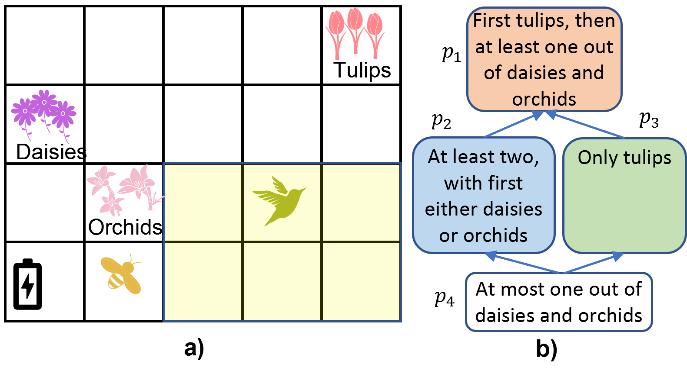

| 
a) Bob's garden. A bee robot is tasked with pollinating the flowers. The environment is uncertain due to the presence of birds, varying weather conditions, and the dynamics of the robot. b) Bob has a preference for how the robot should achieve the task of pollination. The relation defining Bob's preference is a partial order rather than a total order. While planning with preferences forming a total order relation has been well-studied, the question arises: how do we rank plans when dealing with user preferences that form partial order relations? And consequently, how should the planning be conducted? |